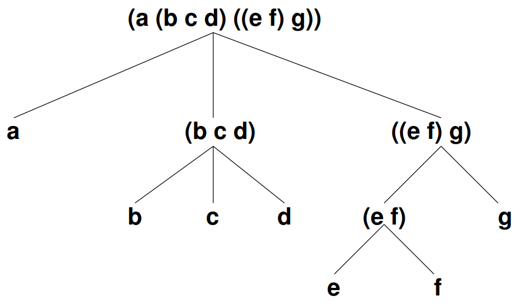
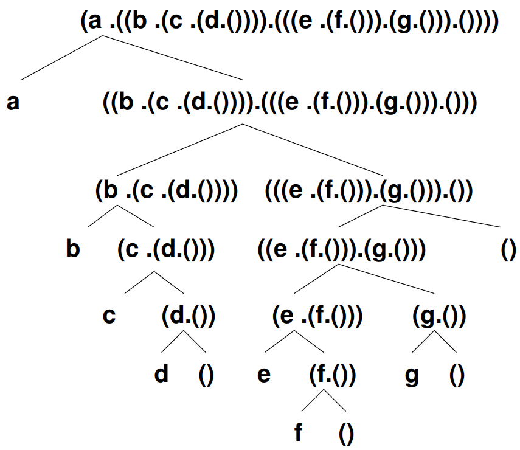

Cette présentation est basée sur les transparents de Prof. Dr. Em. Pascal Gribomont.
Principe. La représentation en mémoire de la valeur de
(cons exp1 exp2) est un couple de pointeurs
vers les représentations des valeurs de exp1 et
exp2. Dans le cas des listes, exp2
est une liste, mais le cas où exp2 n'est pas une
liste est admis aussi.
Extension. Une expression symbolique est un atome ou une paire formée d'expressions symboliques.
Notation pointée. Le point (entouré d'espaces) et les parenthèses représentent l'appariement.
In general, the rule for printing a pair is as follows: use the dot notation unless the dot is immediately followed by an open parenthesis. In that case, remove the dot, the open parenthesis, and the matching close parenthesis. Thus,
'(0 . (1 . 2))becomes'(0 1 . 2), and'(1 . (2 . (3 . ())))becomes'(1 2 3).
> 'a ;; -> aa> (cons 'a 'b) ;; -> (a . b)(a . b)> (cons 'a '()) ;; -> (a . ())(a)> (list 'a) ;; -> (a . ())(a)> (list 'a 'b) ;; -> (a . (b . ()))(a b)> (list 'a (cons 'b 'c)) ;; -> '(a . ((b . c) . ()))(a (b . c))> '(a b c d) ;; -> (a . (b . (c . (d . ()))))(a b c d)> '((a b) (c)) ;; -> ((a . (b . ())) . ((c . ()) . ()))((a b) (c))Une expression symbolique est un arbre binaire dont les feuilles sont des atomes.
(a . ((b . (c . (d . w))) . (((e . (f . x)) . (g . y)) . z)))(cons 'a
(cons (cons 'b (cons 'c (cons 'd 'w)))
(cons (cons (cons 'e (cons 'f 'x))
(cons 'g 'y))
'z)))La notation pointée met en évidence la structure
d'arbre binaire décoré des expressions symboliques.
Chaque nœud a 0 (feuille) ou 2 (noeud interne) fils,
auxquels on accède par car et cdr.
Chaque feuille est (étiquetée par) un atome.
a()(b . 3)((a . b) . c)((7 . g) . (#f . (y . (z . ()))))Les listes sont des expressions symboliques particulières ; chaque point est suivi d'une parenthèse ouverte :
() -> ()
(0) -> (0 . ())
(0 1) -> (0 . (1 . ()))
(0 1 2) -> (0 . (1 . (2 . ())))
((0 1) 2) -> ((0 . (1 . ())) . (2 . ()))Les constructeur et accesseurs et reconnaisseur sont cons, car, cdr, pair?.
Tout point suivi d'une parenthèse ouverte est supprimé, ainsi que la parenthèse ouverte et la parenthèse fermée correspondante.
L'ordre des suppressions est quelconque.
Un point non suivi d'une parenthèse ouverte n'est pas supprimable !
((0 . (1 . ())) . (2 . ()))
((0 . (1 . ())) . (2 ))
((0 1 . () ) . (2 ))
((0 1 . () ) 2 )
((0 1 ) 2 )((a . (b . ())) . ((c . (d . ())) . ()))
((a . (b . ())) . ((c . (d . ()))))
((a . (b . ())) . ((c . (d))))
((a . (b . ())) . ((c d)))
((a . (b . ())) (c d))
((a . (b)) (c d))
((a b) (c d))((a . b) . (c . d))
((a . b) c . d)Une liste se représente conceptuellement par un arbre (quelconque). En machine, on représente plutôt (par un arbre binaire) l'expression symbolique équivalente (en fait, égale).
Représentations de la liste (a (b c d) ((e f) g))
Conceptuelle :
En machine :
Remarque. L'information attachée à un noeud interne se déduit de celle attachée à ses descendants ; seule l'information attachée aux feuilles est explicitement représentée